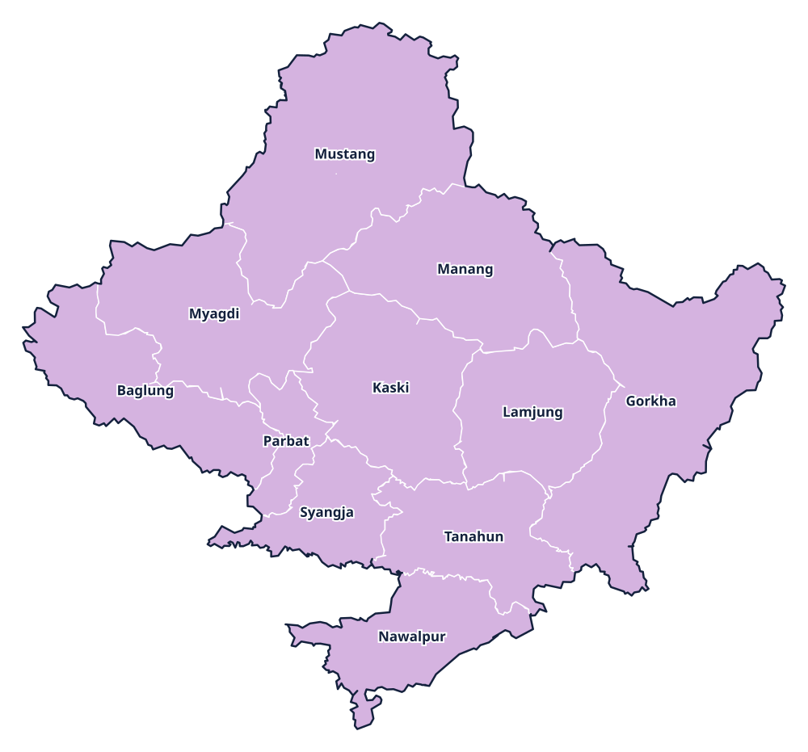

Province 4 · प्रदेश 4
Gandaki Province
गण्डकी प्रदेश

Provincial information
Capital: Pokhara (पोखरा)
Districts: 11
District directory
Select a district to view its profile, find news coverage, and browse local links.
Province 4 · प्रदेश 4
गण्डकी प्रदेश

Capital: Pokhara (पोखरा)
Districts: 11
Select a district to view its profile, find news coverage, and browse local links.